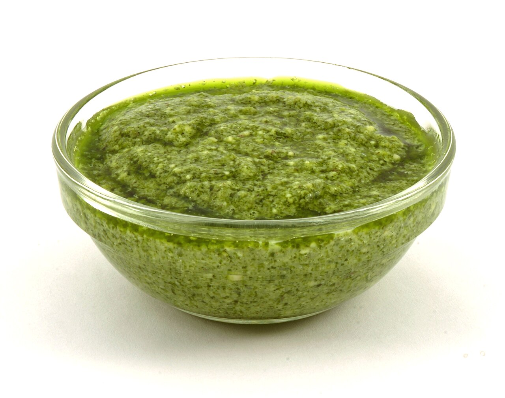

Pesto Pasta
An easy-to-make dish from Italy.
Keep some pesto in the freezer for your next set of meals!
Ingredients
- 1/2 cup garlic, lightly minced
- 250g basil, washed
- 1/2 cup water
- 1 tbsp salt
- Olive oil
Steps
- In a blender, add the basil, water, salt, olive oil, and garlic.
- Mix until it's a paste. You may need to add water or olive oil to help it mix.
- Add to cooked pasta and serve!
Home